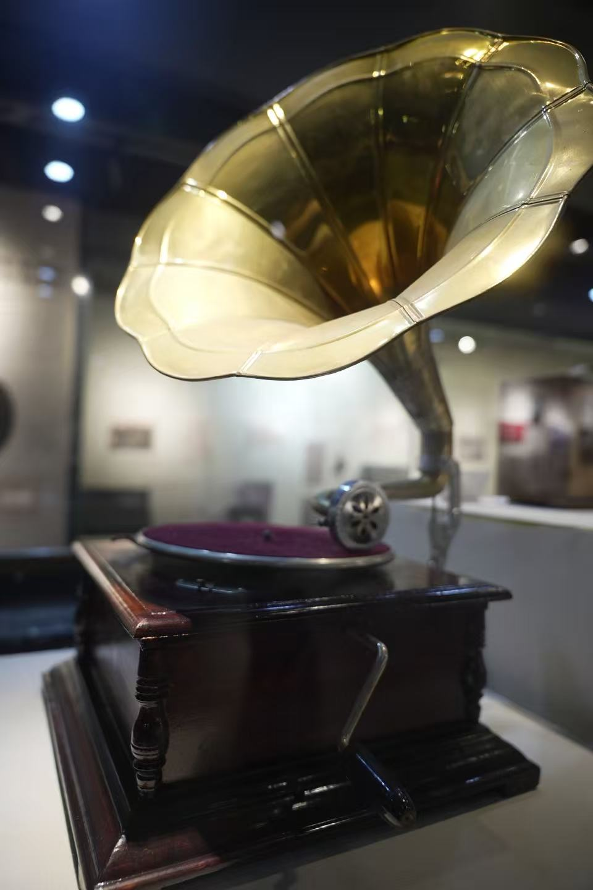
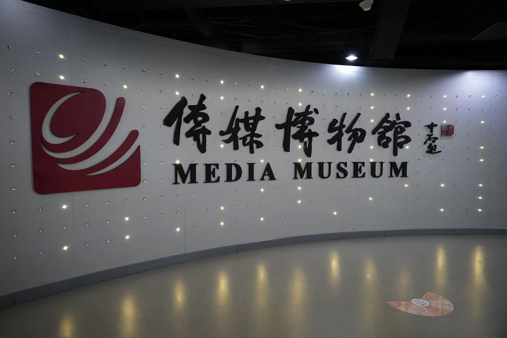
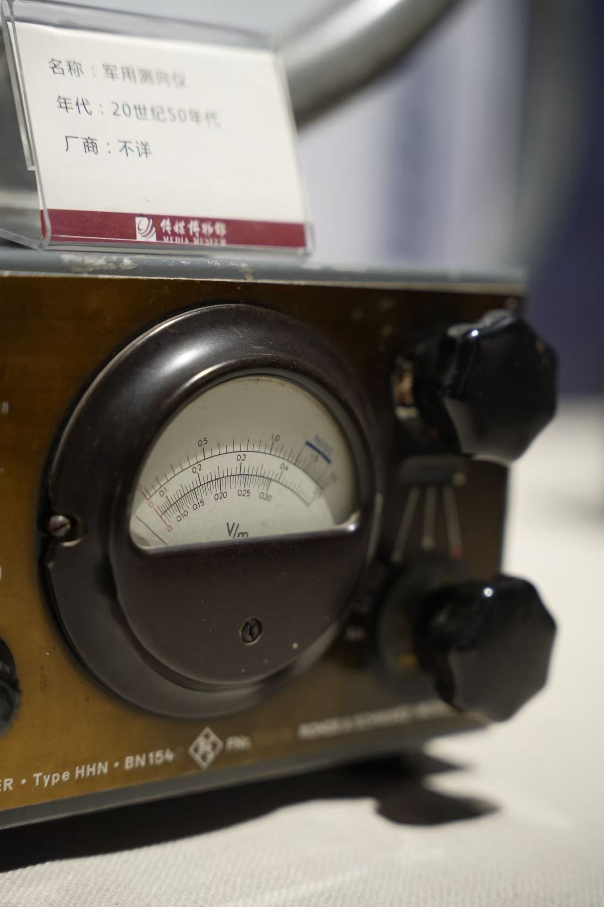
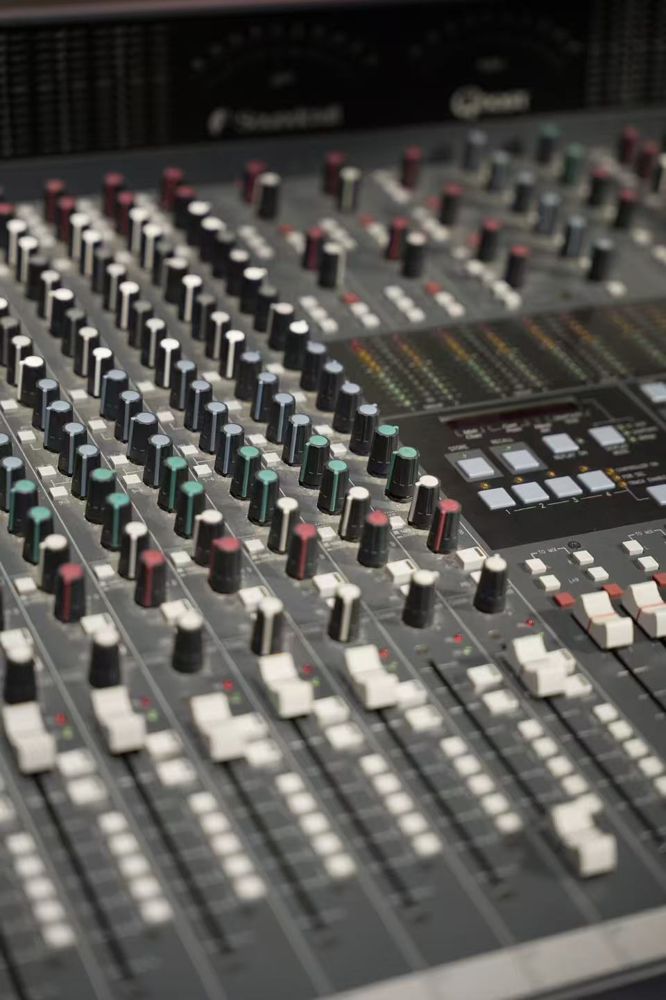
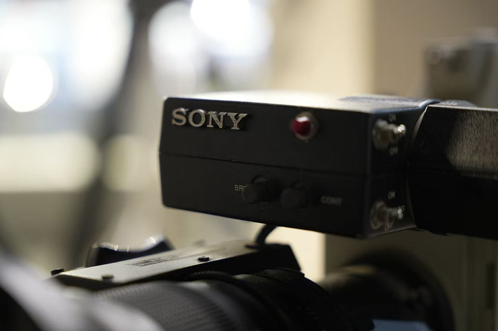

从沟槽到
云端。
声音没有消失。
它只是，一次次更换了栖居之地。

如果声音
也有重量。
一部录音技术史，
也是一部介质的“失重史”。
从唱片沟槽的物理实体，到磁带的轻量化，再到云端数据的无形无相——我们沿着传媒博物馆的展品，追寻声音栖居之地的迁徙。

我们记录展品，也记录聆听的方式。
刻痕与
触觉
把无形的声波，
雕刻成可以触摸的地形。
唱针沿着微米级沟槽移动，机械振动经由喇叭被放大。聆听是一场亲手完成的仪式，每一次播放，也伴随着介质不可逆的磨损。

照片中的仪表并非 VU 表，右侧为 VU 原理示意。
第一次，
看见声音。
VU 表将声音信号的电平转化为指针偏转。录音师终于拥有了一双“看见”声音的眼睛，录音也逐渐走向精密的工程技术。
指针随模拟信号起伏，不代表照片中仪表的实际读数。
磁化与
轻盈
一场交响乐，
开始能够被装进口袋。
声波被转化为电磁信号，记录在磁粉涂层上。实体介质依然存在，却越来越轻：声音变得可剪辑、可携带，也开始自由流动。
介质旁注：光盘同样轻便，但音频 CD 属于数字介质，是从实体载体走向数字编码的一座桥。
A 面 · 记录与携带 / 轻薄的磁带，承载连续的模拟信号。
推子之下，
皆是代码。
声波被采样、量化，化为 0 与 1。声音可以在数字世界中按位复制、反复混音与重构，传统载体逐渐退到幕后。

交互示意：改变三个频段，观察混合波形的变化。
无形，
却非无物。
当声音走向云端，
物质并没有真正消失。
数据背后，仍有服务器、光纤与能源。介质的隐退，是基础设施的隐匿重组；随时唤醒的记忆，也越来越依赖网络与平台。
声音，变成一串数字。
采样与量化把连续的声波表示为离散数据。声音不再只与某一张唱片或某一盘磁带绑定。
“失重”的，
究竟是什么？
从实体占有走向虚拟共享，变化的不止是存储方式，
还有我们与记忆的关系。
声音，住在手中的物件里。
沟槽的深浅、唱针的触碰、唱片的划痕，共同构成有重量的听觉记忆。保存声音，也意味着照料一件实体。
虚拟化并非绝对的物质消亡。
隐退的是可见的载体，重组的是媒介的物质性。
时光镌刻的
诗行。
载体会更迭，回声仍有温度。
从手中的纹路，到云端的微光，
每一次重新聆听，都是与时间重逢。
传媒博物馆实地考察 · 小组作业
史迪奇大战六七先生 / 2026

继续被听见。